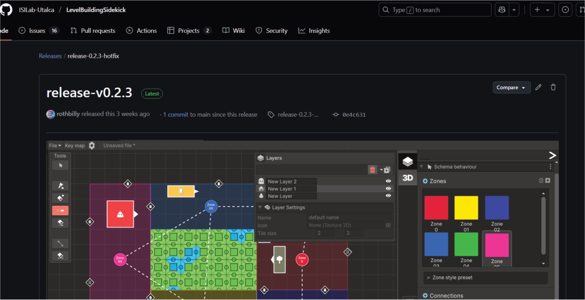
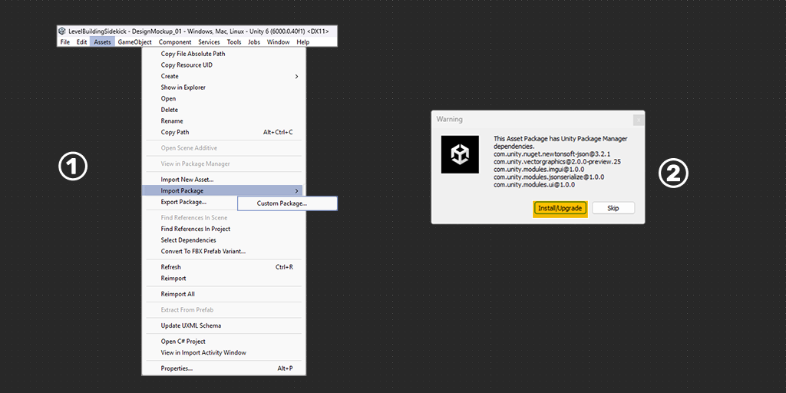
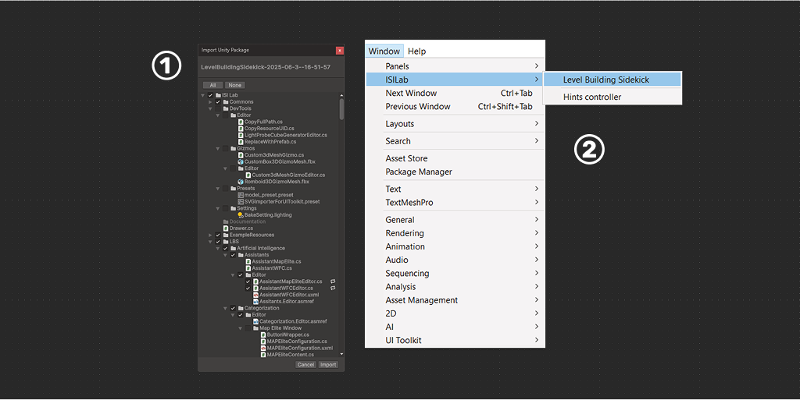

Installation (GitHub Verison)
LBS, an extension for Unity Engine, follows a standard installation process similar to other Unity extensions. Below are the necessary steps for installation:
Current release

LBS V0.4.1 For Unity version 6000.0.40f1
How to install!
System Requirements: This extension is developed to be compatible with Unity 6 versions 6000.0.40f1 or higher. To start the installation, it is required to download some packages like newtonsoft.JSON. The engine will recognize this when installing the LBS package and open a window that will facilitate their import.

- A: To import LBS, go to the toolbar: Assets > Import Package > Custom Package.
B: In the file browser select the downloaded packageLevelBuildingSidekick-2025-06-3--16-51-57.unitypackagefile and click Open. - The indicated packages must be imported for LBS to function properly. Clicking on Install/Upgrade will automatically install the required packages.

- To include the “LBSPackage” package in your project (and it's assets), you need to double-click on the file with the Unity project open. Unity will automatically recognize it and ask what you want to include. Click “IMPORT”, and the project import is ready.
- To start working click on the
Windowtab, go to theISILabsection and then click onLevel Building Sidekick, to bring up the tool's working window.